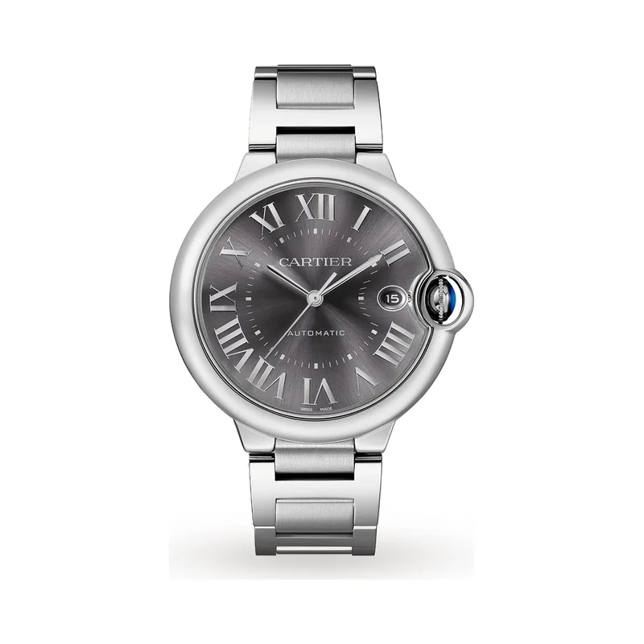

Encyclopedia / Cartier / Ballon Bleu de Cartier 40 mm

Current deal · verified Oct 19, 2026, 10:07 PM ET
$7,585 WatchMaxx's listed retail $8,200
Save $615 (8%) · new · WatchMaxx
Ref. WSBB0060 (40 mm, steel bracelet) · Available (WatchMaxx: limited quantity)
Brand new from a grey-market dealer; the warranty may be WatchMaxx's rather than Cartier's. Cartier's US site now shows a 40 mm steel Ballon Bleu as CRWSBB0061 but didn't display a price when I checked. Prices change fast; check the store before you buy.
Price comparison: fixed-price listings
| Store | Condition | Box & papers | Asking price | Link | Checked |
|---|---|---|---|---|---|
| Watchfinder | pre-owned | Yes | $6,185 | View | Oct 19, 2026 |
| Chrono24 marketplace seller | new | Not stated | $6,542 | View | Oct 19, 2026 |
| WatchMaxx | new | Yes* | $7,585 | View | Oct 19, 2026 |
Fixed-price (buy-now) asking prices in USD for ref. WSBB0060, cheapest new and cheapest pre-owned with box and papers per store, sorted low to high and checked Oct 19, 2026 (ET). Buy-now listings only. Pre-owned listings are shown only when the listing states box and papers. * New from a grey-market dealer: comes boxed, but the warranty card may be the dealer's rather than the brand's. Chrono24 rows are individual third-party marketplace sellers. Prices change fast; confirm with the store.
What it really costs
| Market | Price | Source |
|---|---|---|
| Retail | $8,200 (WatchMaxx's listed retail for WSBB0060) | watchmaxx.com |
| Grey-market new | $7,585 at WatchMaxx | watchmaxx.com |
| Pre-owned | about $5,100 – $7,700 (median ~$6,450) | Chrono24 |
All prices in USD, checked Oct 19, 2026 (ET). Pre-owned ranges are the middle 80% of asking prices on the first Chrono24 results page for that ref (about 60 listings, used and some unworn), fixed-price listings only. Grey-market = brand-new from a non-authorized dealer.
Buying guide
Key references
| Ref. | What it is | US retail |
|---|---|---|
| WSBB0060 | 40 mm steel, silvered guilloché dial, steel bracelet, 1847 MC | $8,200 (WatchMaxx's listed retail) |
| CRWSBB0061 | 40 mm steel Ballon Bleu currently on Cartier US | Price not shown |
Which one I'd pick
New vs pre-owned: new is only about 8% under the listed retail. Pre-owned asks centre on about $6,450, which is the better value if you're happy without a fresh warranty.
What to check before you buy
- Box and papers: a brand warranty card matters for resale. Grey-market new watches may carry the dealer's warranty instead of the brand's, so ask which one you're getting.
- Ref check: the Ballon Bleu comes in many sizes (33, 36, 40, 42 mm) and metals. Match the ref and size.
- Fakes and red flags: avoid prices far below the grey-market numbers above, stock photos only, or sellers who won't show the caseback, clasp and warranty card.
Alternatives worth a look
- Cartier Santos de Cartier: Cartier's square automatic icon. (35.1 x 41.9 mm steel (medium), Calibre 1847 MC, retail $8,400 (WSSA0029, medium, steel, Cartier US))
- Omega Seamaster Aqua Terra 150M: A dressy everyday Omega, well under retail. (41 mm stainless steel, Calibre 8900, retail $7,400 (220.10.41.21.01.002, 41 mm steel on steel))
- Cartier Tank Must: The affordable rectangular Cartier. (33.7 x 25.5 mm steel (large), High-autonomy quartz, retail $4,400 (CRWSTA0106, large, steel bracelet, Cartier US); WSTA0041 no longer listed)
History
Cartier launched the Ballon Bleu in 2007. It's defined by its rounded, convex case and the blue crown set under a protective arc.
The 40 mm WSBB0060 is steel on a steel bracelet, with a silvered dial, sword-shaped hands and Roman numerals.
The WSBB0060 uses Cartier's in-house Calibre 1847 MC automatic movement.
Specifications
| Brand | Cartier |
|---|---|
| Model | Ballon Bleu de Cartier 40 mm |
| Key references | WSBB0060 |
| Launch year | 2007 |
| Case | 40 mm steel |
| Movement | Calibre 1847 MC, automatic |
| Power reserve | Not confirmed |
| Water resistance | 30 m |
| Approx. US retail (Oct 2026) | Not confirmed |
Specs from the brand's official product page for the main reference. Retail prices are list prices, not market value, and change often.
Highlights
- Crown nested in a guard
- Convex case
- Guilloché dial
FAQ
How much is a Cartier Ballon Bleu 40 mm?
WatchMaxx lists the WSBB0060 at $7,585 new against an $8,200 listed retail (checked Oct 19, 2026). Pre-owned asking prices on Chrono24 mostly ran about $5,100 to $7,700.
When did the Ballon Bleu come out?
In 2007.
What movement is in the Ballon Bleu WSBB0060?
Cartier's Calibre 1847 MC automatic.
What's the difference between WSBB0060 and CRWSBB0061?
Both are 40 mm steel Ballon Bleus. CRWSBB0061 is the reference Cartier's US site shows now; WSBB0060 is the one dealers still sell new.
Want this watch for less?
Every week I hunt down genuine deals on watches like the Ballon Bleu de Cartier 40 mm and send the best ones. Free, one email a week.
Get the free weekly issuePrices and availability last checked Oct 19, 2026. No affiliate links: I don't earn anything if you buy. Sources are listed in our research notes and linked above.